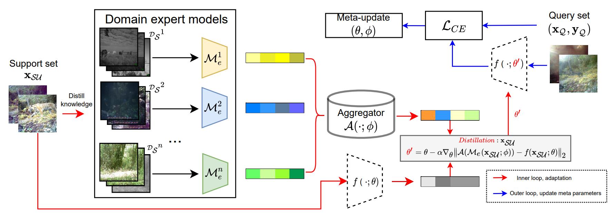

|
Hi! I am a research engineer at Noah’s Ark Lab, Huawei Canada in Toronto, where I work on computer vision and machine learning. I am currently working on xxx, supervised by Prof. Wang Yang. I obtained my Master's degree in Computer Engineering at University of Toronto in 2018. Email / Google Scholar / Github / Linkedin |
{kind=link}
|
My primary research interests lie at the intersection of machine learning and computer vision. |
|  |
Tao Zhong*, Zhixiang Chi*, Li Gu*, Yang Wang, Yuanhao Yu, Jin Tang NeurIPS, 2022. Paper / Slides / Code Propose a new framework for unsupervised test-time adaption towards domain shift; Formulate the adaptation process as knowledge distillation and meta-learn the scheme of knowledge aggregation from multiple source domains. |

|
Li Gu, Zhixiang Chi*, Huan Liu*, Yuanhao Yu, Yang Wang CVPR 2022 VisWiz workshop. Winning team at ORBIT few-shot object recognition challenge Award cash prizes of 2,500 USDPaper / Slides / Code Propose a new framework for unsupervised test-time adaption towards domain shift; Formulate the adaptation process as knowledge distillation and meta-learn the scheme of knowledge aggregation from multiple source domains. |